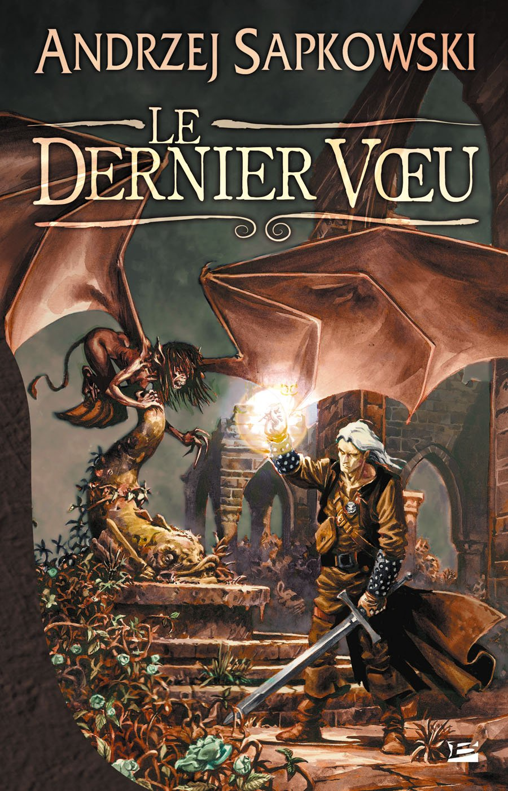

The Witcher,
Le Dernier Vœu
Numéro ISBN : 978-2352941408
Écrivain : Andrzej Sapkowski
Traducteur : (non renseigné)
Éditeur : Bragelonne
Date de publication : 24 janvier 2008
Genre : Fantasy
Nombre de pages : 318
Langue : Français
Résumé : Ce livre introduit le personnage principal, Geralt de Riv, un sorceleur qui chasse les monstres en échange de récompenses. L’histoire explore la complexité morale des décisions qu’il prend, souvent en s’inspirant de contes classiques réinterprétés de manière sombre et réaliste.